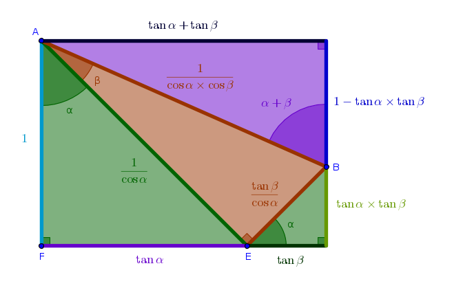

\(\tan (\alpha + \beta)\)
Problem
Express the tangent of a composite angle \(\alpha + \beta\) in terms of trigonometric functions of primitive angles \(\alpha\) and \(\beta\).
Solution
In \(\sin (\alpha + \beta)\) chapter we have made an attempt at showing how an identity can be derived at via a series of trial and error geometric constructions. However, in this chapter we will not be as verbose. Our goal here is to see if the arrangement that worked for the sine and the cosine will also work for the tangent.
As such:

By definition we have:
$$\tan (\alpha + \beta) = \frac {BC}{AC} =$$ $$\frac {BG + GC}{AC} =$$ $$\frac {BG + GC}{AF - CF} =$$ $$\frac {BG + EF}{AF - GE}$$Divide both parts of the above fraction by \(AF\):
$$\frac {BG + EF}{AF - GE} = \frac {\frac {BG + EF}{AF}} {\frac {AF - GE}{AF}} =$$ $$\frac {\frac {BG}{AF} + \frac {EF}{AF}} {\frac {AF}{AF} - \frac {GE}{AF}} =$$ $$\frac {\frac {BG}{AF} + \frac {EF}{AF}} {1 - \frac {GE}{AF}}$$From \(\triangle AFE\) we have:
$$\frac {EF}{AF} = \tan \alpha$$And hence:
$$\tan (\alpha + \beta) = \frac {\frac {BG}{AF} + \tan \alpha} {1 - \frac {GE}{AF}}$$In \(\sin (\alpha + \beta)\) chapter we have proved already that:
$$\angle CBE = \alpha$$The angles at \(F\) and \(G\) are right by construction.
From Euclid's "Elements" Book 1 Proposition 32, the sum of internal angles in any triangle is equal to two right angles, it follows that the remaining angles, \(\angle AEF\) and \(\angle BEG\), are also equal.
By AAA \(\triangle AFE\) and \(\triangle BGE\) are similar and from Book 6 Proposition 4, the sides about the equal angles of similar triangles are in the same proportion, it follows that:
$$\frac {BG}{BE} = \frac {AF}{AE}$$ $$BG \times AE = AF \times BE$$ $$\frac {BG}{AF} = \frac {BE}{AE} = \tan \beta$$And hence:
$$\tan (\alpha + \beta) = \frac {\tan \beta + \tan \alpha} {1 - \frac {GE}{AF}}$$To express the remaining fraction in the above formula in terms of trigonometric functions of a primitive angle we observe that \(GE\) and \(AF\) do not have an immediately useful connection - to find it we have to go through one more level of inderection.
\(GE\) is a side of \(\triangle BGE\) with hypotenuse \(BE\). \(BE\) is also a side of \(\triangle AEB\) with \(AE\) as its other side. \(AE\) is also a hypotenuse of \(\triangle AFE\) of which \(AF\) is one side. So then the connection between \(GE\) and \(AF\) goes from \(GE\) to \(BE\), from \(BE\) to \(AE\), from \(AE\) to \(AF\).
Since we have identified two extra sides that create a connection between \(GE\) and \(AF\) we work both of them into the fraction in a neutral but useful way as the rearrangement approach prescribes:
$$\frac {GE}{AF} = \frac {GE}{AF} \times 1 \times 1 =$$ $$\frac {GE}{AF} \times \frac {BE}{BE} \times \frac {AE}{AE} =$$ $$\frac {GE}{BE} \times \frac {BE}{AE} \times \frac {AE}{AF}$$From \(\triangle BGE\) we have:
$$\frac {GE}{BE} = \sin \alpha$$From \(\triangle AEB\) we have:
$$\frac {BE}{AE} = \tan \beta$$From \(\triangle AFE\) we have:
$$\frac {AE}{AF} = \frac {1}{\cos \alpha}$$Hence:
$$\frac {GE}{AF} = \frac {\sin \alpha}{\cos \alpha} \tan \beta =$$ $$\tan \alpha \tan \beta$$And finally:
$$\bbox[#e8e8e8,3pt]{\tan (\alpha + \beta) = \frac {\tan \alpha + \tan \beta}{1 - \tan \alpha \tan \beta}}$$Now that we have found out that the arrangement of right triangles that worked for the sine and cosine of a compound angle also works for the tangent of a compound angle we can repurpose the drawing from the sine and cosine chapter that demonstrates the identities in question without words.
For the tangent, though, we have to reassign the magnitudes of the line segments as follows: instead of \(AB\) being a unity we make \(AF\) to be of length \(1\) and the magnitudes of lengths of the remaining line segments follow automatically:
\(\blacksquare\)